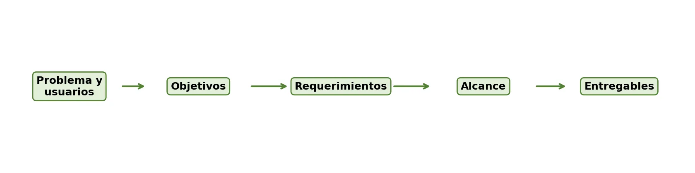

🧭 De la idea a un plan que se puede construir
Ya identificaste el problema, la necesidad y los usuarios objetivo de tu proyecto web 🎉. El siguiente paso es organizar con claridad qué quieres lograr, qué funciones debe tener la solución, hasta dónde llega el proyecto y qué productos concretos vas a entregar. Este paso es el que convierte una idea general en una propuesta ordenada y posible de construir.
En muchos proyectos tecnológicos, los errores no aparecen solo en la programación: aparecen desde la formulación. Cuando los objetivos son confusos, los requerimientos no están definidos o el alcance es demasiado amplio, el equipo termina construyendo funciones innecesarias... o dejando por fuera lo que el usuario realmente necesitaba. 😬
En este OVA vas a trabajar el objetivo general, los objetivos específicos, los requerimientos funcionales y no funcionales, el alcance de la primera versión y los entregables de tu proyecto, con actividades prácticas para que tu equipo avance en el documento de formulación.
Al final, tu equipo tendrá lista una matriz de formulación 📋 con objetivos, requerimientos, alcance y entregables. Esta matriz será la base para la siguiente guía de la unidad, donde trabajarán el plan de trabajo, los roles, los tiempos, las herramientas de gestión y el control de versiones.
✨ Un buen plan no adivina: se puede leer, medir y verificar. Al terminar este OVA, tu equipo va a saber exactamente qué construir primero y qué dejar para después. 🚀

Objetivos de aprendizaje
- 🧠 Diferenciar el objetivo general y los objetivos específicos dentro de la formulación de un proyecto web.
- ✍️ Redactar objetivos claros, medibles y coherentes con el problema y la necesidad del usuario.
- 🧩 Identificar requerimientos funcionales y no funcionales de una solución web, considerando las necesidades de los usuarios objetivo.
- 🖇️ Delimitar el alcance del proyecto web, precisando qué se incluirá y qué quedará por fuera de la primera versión.
- 📦 Definir los entregables principales del proyecto como evidencias concretas del avance y resultado esperado.
🔍 Modo exploración: recorre las 5 estaciones y suma puntos
⭐ Puntos: 0
Actividades
🎮 Modo misión activado — completa las 7 misiones de tu equipo
🏅 Misiones: 0/7
🕵️ Misión 1: Cuestionario de comprensión
Responde de forma individual, con ejemplos relacionados con desarrollo web cuando se te pidan.
📝 Producto esperado: El cuestionario respondido de forma individual por cada integrante.
🔁 Misión 2: Revisión del problema y la necesidad
Esta actividad retoma la ficha inicial del proyecto que construyeron en el tema anterior. Avancen fase por fase.
Fase 1. Marquen lo que ya tienen de la ficha inicial:
Fase 2. Tabla de verificación:
Fase 3. Análisis de coherencia (problema → necesidad → usuarios objetivo → posible solución web):
Fase 4. Ajuste de la formulación inicial:
📝 Producto esperado: Tabla de verificación completa, ficha inicial ajustada y explicación de los cambios realizados.
✍️ Misión 3: Redacción de objetivos
Redacten el objetivo general y entre tres y cinco objetivos específicos de su proyecto web. Inicien con verbos en infinitivo.
| Tipo de objetivo | Redacción propuesta |
|---|---|
| Objetivo general | |
| Objetivo específico 1 | |
| Objetivo específico 2 | |
| Objetivo específico 3 | |
| Objetivo específico 4 | |
| Objetivo específico 5 |
📝 Producto esperado: Objetivo general y entre 3 y 5 objetivos específicos redactados.
🧩 Misión 4: Matriz de requerimientos
Construyan una matriz inicial con mínimo seis requerimientos funcionales y cuatro requerimientos no funcionales.
| Código | Tipo | Descripción del requerimiento | Prioridad | Usuario relacionado |
|---|
📝 Producto esperado: Matriz con al menos 6 requerimientos funcionales y 4 no funcionales.
🖇️ Misión 5: Delimitación del alcance
Definan qué se incluirá y qué no se incluirá en la primera versión del proyecto.
| Se incluirá en la primera versión | No se incluirá en la primera versión |
|---|
📝 Producto esperado: Lista de elementos incluidos y excluidos de la primera versión.
📦 Misión 6: Definición de entregables
Identifiquen los productos que entregarán como evidencia del avance y resultado de su proyecto web.
| Entregable | Descripción | Fecha o momento estimado |
|---|---|---|
| Documento de formulación | ||
| Matriz de requerimientos | ||
| Prototipo o wireframes | ||
| Aplicación funcional | ||
| Documentación o manual de usuario | ||
| Presentación final |
📝 Producto esperado: Tabla de entregables con descripción y fecha o momento estimado para cada uno.
🎤 Misión 7: Socialización de avance
Como cierre, los equipos participarán en una jornada de socialización presencial y conjunta para compartir los avances de la formulación de su proyecto web.
Marquen lo que ya tienen listo para presentar:
📝 Producto esperado: Presentación realizada y ajustes incorporados al documento de formulación.
📦 Evidencia de aprendizaje: Documento de formulación parcial
Cada equipo debe entregar un documento de formulación parcial del proyecto web que incluya:
📊 Criterios de valoración de la actividad
| Criterio | Nivel esperado |
|---|---|
| Coherencia de los objetivos | Los objetivos se relacionan claramente con el problema, la necesidad identificada y los usuarios objetivo. |
| Claridad de los requerimientos | Los requerimientos están redactados de manera comprensible, concreta, organizada y verificable. |
| Diferenciación de los requerimientos | El equipo distingue adecuadamente entre los requerimientos funcionales y los no funcionales. |
| Delimitación del alcance | El alcance de la primera versión es concreto, realista y viable de acuerdo con los recursos y conocimientos disponibles. |
| Definición de los entregables | Los entregables son pertinentes, verificables y evidencian avances concretos en la construcción del proyecto web. |
| Coherencia de la formulación | Existe relación lógica entre el problema, la necesidad, los objetivos, los requerimientos, el alcance y los entregables. |
| Socialización de la propuesta | El equipo comunica de manera clara y organizada los principales avances de la formulación del proyecto. |
| Trabajo colaborativo | Los integrantes participan en la discusión, construcción, presentación y ajuste de la propuesta. |
| Apropiación de la retroalimentación | El equipo analiza e incorpora las recomendaciones pertinentes para mejorar el documento de formulación. |
Evaluación
Comprueba lo que has aprendido. Selecciona la respuesta correcta para cada pregunta.
Recursos para profundizar
Para ampliar tu conocimiento, te recomendamos explorar los siguientes recursos:
-
La guía rápida para definir el alcance de tu proyecto en 8 pasos
Guía práctica con 8 pasos para definir el alcance de un proyecto y establecer límites claros que eviten desviaciones innecesarias.
Ir al recurso -
Requisitos funcionales y no funcionales (con ejemplos)
Explica la diferencia entre requisitos funcionales (qué debe hacer el sistema) y no funcionales (qué tan bien debe hacerlo), con ejemplos.
Ir al recurso